I am a software developer and electrical engineer with a background in device physics, artificial intelligence and machine learning, and software for embedded devices, web services, and data analytics. I enjoy combining statistical techniques and machine learning with modern software tools and best practices to automate complex tasks. I currently work as a software development engineer at Amazon Web Services.
Nick Kantack
Projects
Tactical x-ray vision
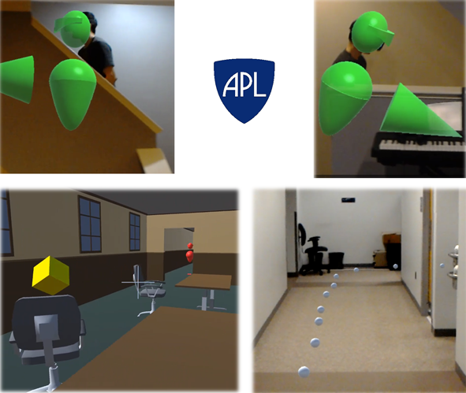
At APL, I led a project to build a system of body-worn sensors that would allow tactical team members to see each other through floors, walls, and obstacles in augmented reality. Using Microsoft's HoloLens, we demonstrated this and other exciting capabilties of tactial use of AR.
Hanabi Challenge at APL
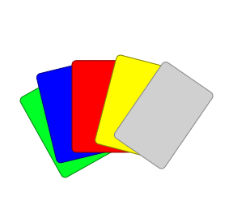
I developed a Hanabi AI that won APL's Learning to Read Minds Challenge by achieving the highest scores when playing with human teammates. My bot took the lead over other APL agents as well as agents developed by DeepMind, Facebook, and academia.
AWS Bedrock powered web assistant
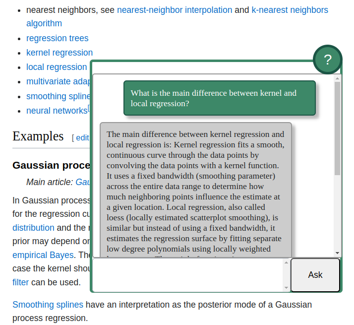
Using Tampermonkey, AWS Lambda, and AWS Bedrock I created a chat widget with an AI assistant that can interact with the user's browser to retrieve information and take action in response to user requests.
Computer vision
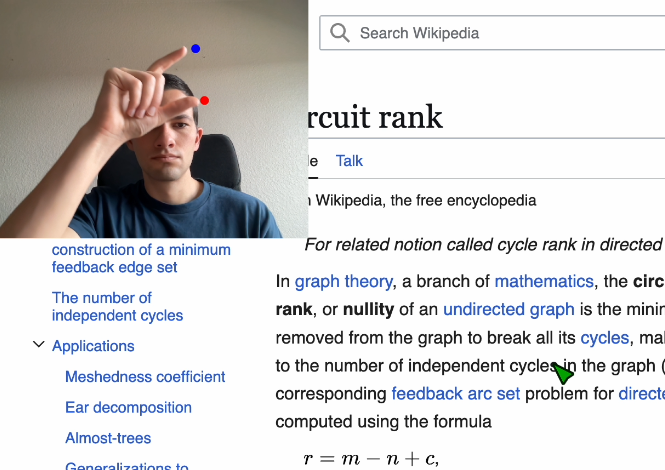
Recently I've worked on two fun computer vision projects: one to allow gesture control of a web browser, and one to perform eye tracking through a webcam.
"No Box" Neural Network Attacks
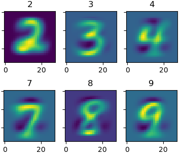
Recently I've explored the idea of generating adversarial inputs to neural networks based not on knowledge of the target network, but rather on knowledge of the input space. Through a formalism that treats the weights of unknown, target networks as random variables, I explore how one can craft attacks for neural networks that do not yet exist!
Bionically controlled robot arm
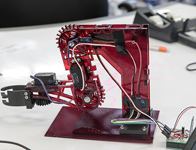
To win an APL hackathon, I built a robot arm that I controlled remotely with my own! From start to finish, this devices was designed and built in one week and was predominately built of laser cut acrylic with some 3D printed hardware.
Quantum computing in the cloud
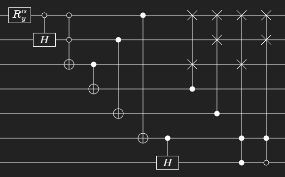
For a fun work talk I walked through how to use open source and a little knowledge about quantum circuits to write computational tasks that can be run on real quantum computers.
CAD and mechanical fabrication
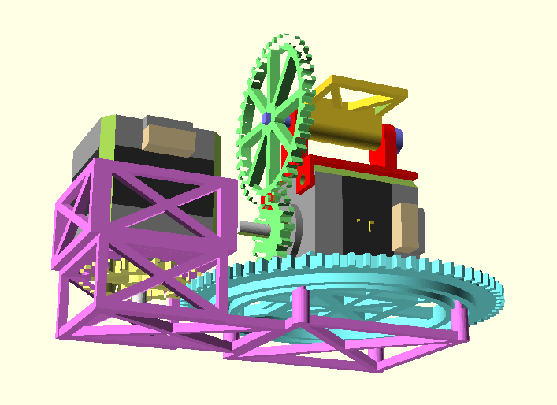
I've done lots of CAD in my career and published an open source library of 3D constructs that I regularly use in my projects.
Multipath simulation
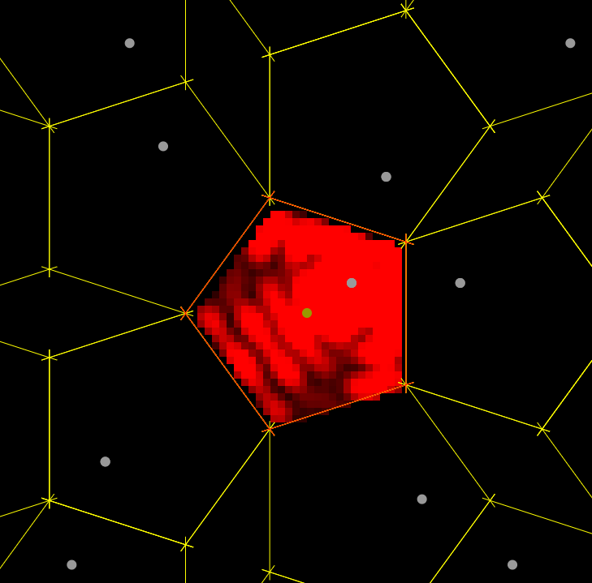
Using a custom simulation, I explore how the propagated signal of a transmitter in a closed room is equivalent to open-air signal of an infinite lattice of ghost transmitters, and implications this has for indoor localization and room geometry estimation.
Literature
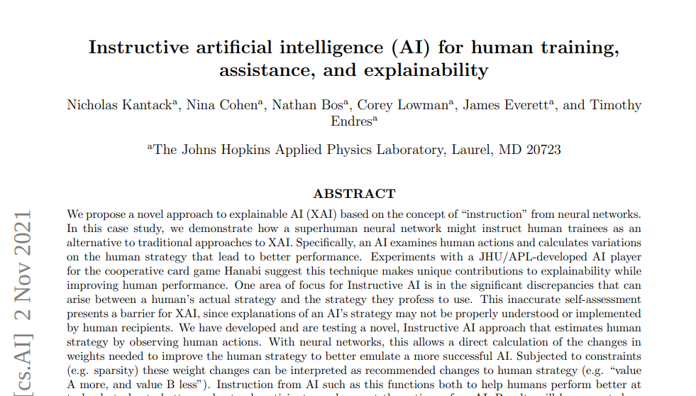
I've written academic papers, given conference presentations, and made open source software libraries.
Music
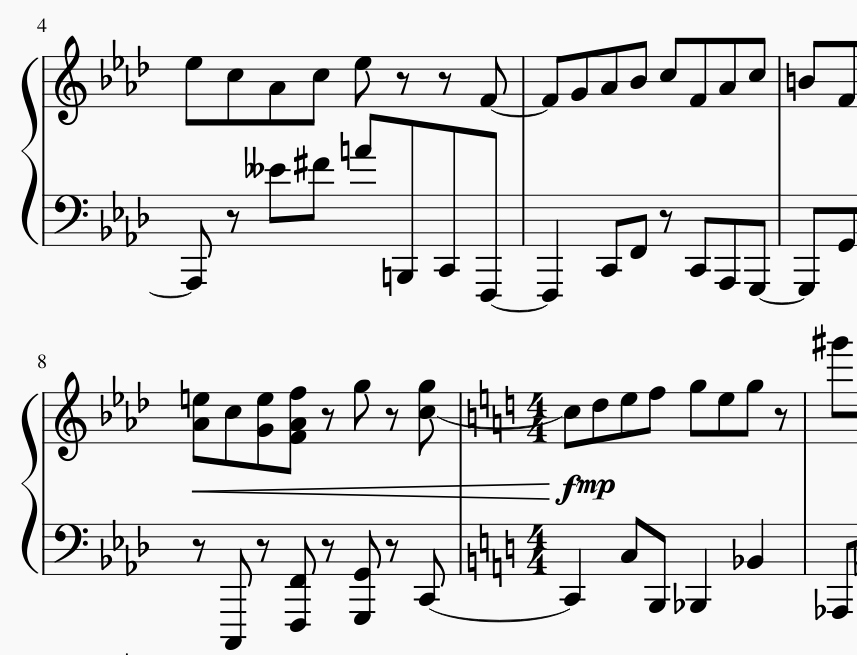
I spend a lot of my free time making musical creations. From jazz to classical, arrangements to original compositions, I like to dabble in just about everything.